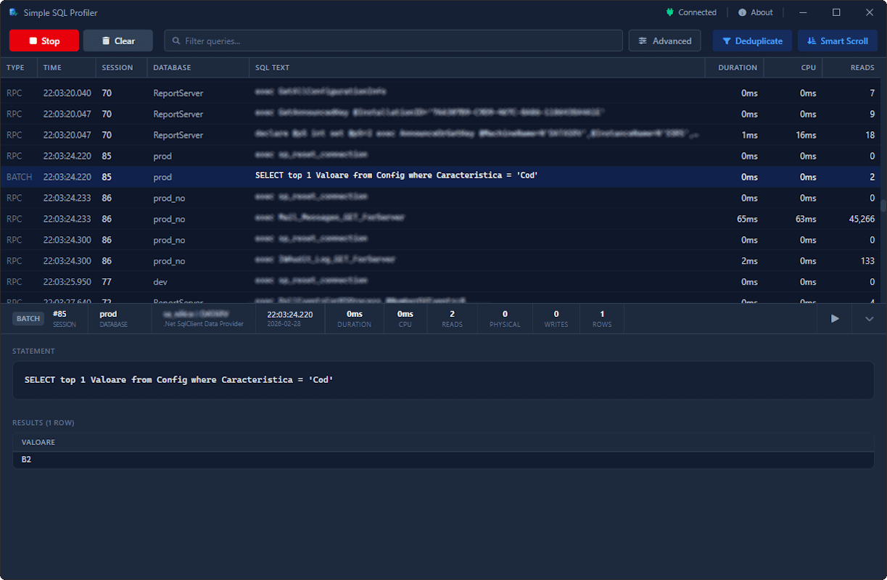

Simple SQL Profiler
The Modern Desktop SQL Profiler
Directly connect to your SQL Server and capture running queries instantly. A beautifully designed, local-only developer tool built with Tauri and SolidJS.

Powerful features in a private package
Designed for long debugging sessions without the clutter.
Real-time Capture
Directly connects to your SQL Server via standard connection strings and captures running queries instantly as they happen.
Advanced Filtering
Locate specific queries targeting detailed databases, programs, or logins. Build complex conditions visually to pinpoint specific events.
Smart Deduplication
Automatically deduplicates identical consecutive SQL statements to keep the live feed clean, easy to read, and stutter-free.
Local-only & Secure
Zero telemetry. Connects directly using local drivers. Extracted session data never leaves your machine.
Ready to profile your database?
Simple SQL Profiler is open-source. Just download, install, and start capturing events directly from your database.